Just starting out?
Don’t miss the setup guide .
Choose your destination
Beginners guide
The beginners guide is a linear guide,
it follows a semi logical progression about getting started with luxe.
Getting Started
Images and sprites
Sprites and animation
Text and tweening
Feature guide
The feature guide is a piece by piece reference for specific features of the engine, designed to explain and teach what the engine can do.
gameplay
timers transformsapp timingaudioscenephysicscollision
rendering
sprite
sprite animation
color render batching
render control
shaders camerastilemaps
drawing ninesliceparticlestextures
fonts
systems
assets mathsstates
events
components
tweening
utils
Details guide
The detail guide is a look at the inner structure and design philosophy behind the engine and it’s pieces, as well as elaborate on common questions.
OpenGL API access
OpenAL API access
snow API access
Advanced guide
The advanced guide is for more experienced developers looking to fully understand and take advantage of squeezing more out of the engine.
Beginners guide
Getting Started with luxe
- Understanding the anatomy of a luxe game,
drawing a sprite, and moving it around. 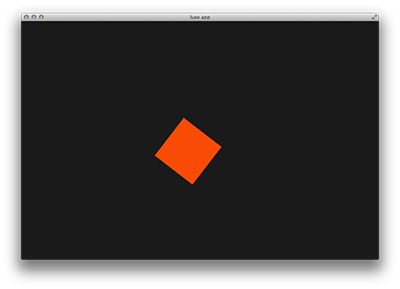
Images and sprites
- Drawing static images, flipping, and movement 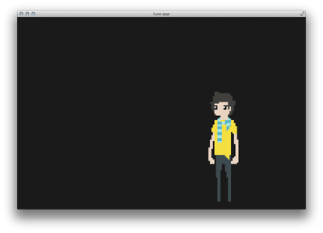
Sprites and animation
- Drawing animated sprites, preloading, and more 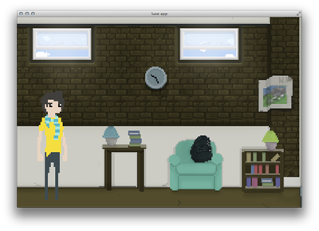
Text and tweening
- Playing some sounds, fading, simple events, text and more 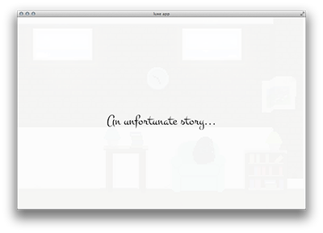
Feature guide
These can be used and read in any order
These vary from feature reference guides to in depth article guides.
Gameplay
scene
- Scene/entity relationship
physics
- Physics hook implementation 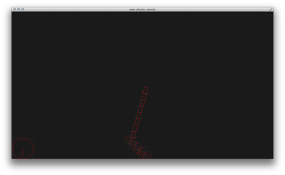
collision
- SAT collision query helpers 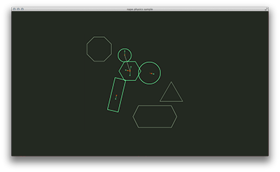
transforms
- transformation stack for spatial control (pos/rot/scale) 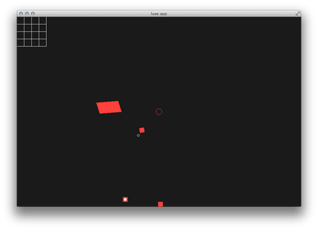
app timing
- app timing, timescale, fixed rate, etc
timers
- scheduling things in time, once or repeating
audio
- playing music and sound effects
Rendering
sprite
- Sprite feature guide
sprite animation
- How to bring your sprites to life by importing sprite sheets or using separate images.
color guide
- The different types of color classes and utility functions for handling HSL, HSV, and RGB color. 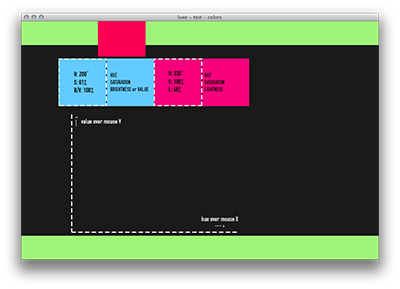
render batching
- understanding and using the batching system effectively
render control
- controlling depth, blend mode, and using render events like pre/post render 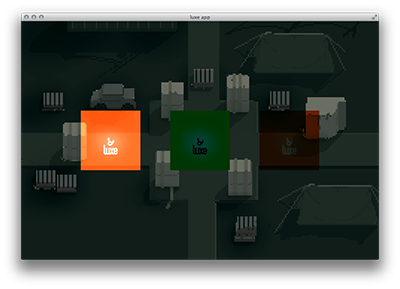
shader guide
- Understanding how to use shaders on your sprites or geometry. 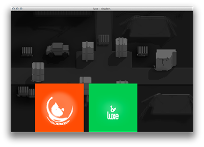
cameras
- creating and manipulating views 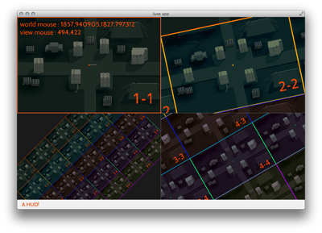
tilemaps
- creating manually, or loading tilemaps from Tiled 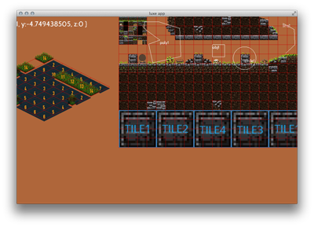
drawing guide
- How to draw shapes, text, and to create custom geometry 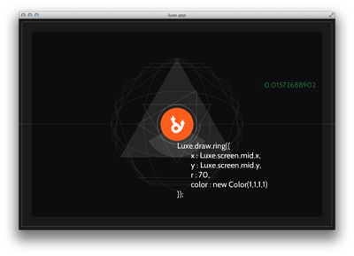
nineslice
- “Nine slice” scaleable graphics helper guide
particles
- using the default simple particle system 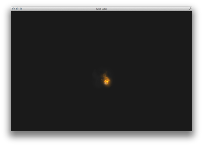
textures
- managing and working with textures and render textures
fonts
- creating, loading and displaying custom bitmap fonts
Systems
assets
- loading and using text, bytes, or other assets with parcels
maths
- using Matrix, Quaternion and Vector and Math utils
states
- using the built in state machine, for stackable, transient or modal states
events
- Using the event system to communicate locally and globally.
components
- using the built in component entity system
tweening
- Making things animate smoothly over time using tweening. 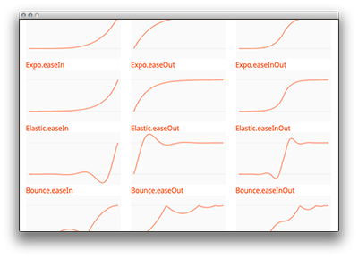
utils
- Find out about utilities like maths and geometry functions
Detail guide
:todo:
:todo: